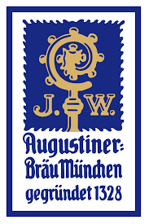
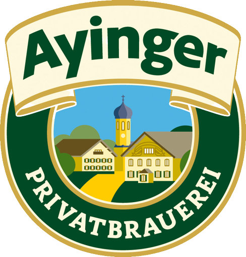
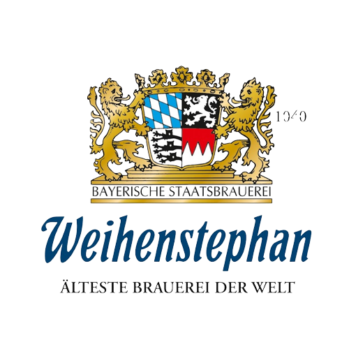
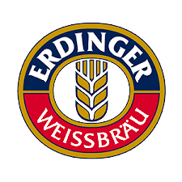
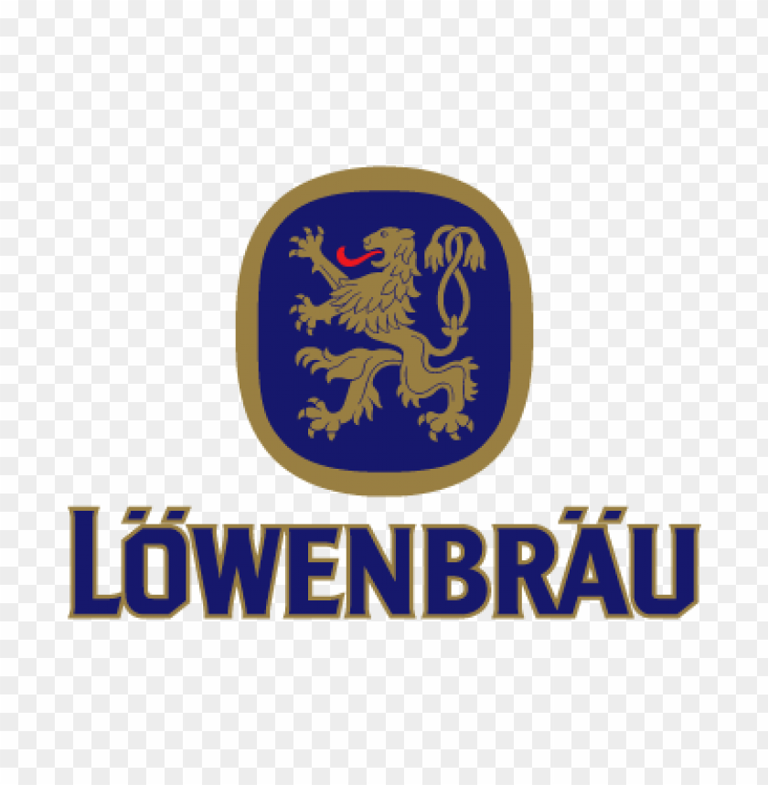
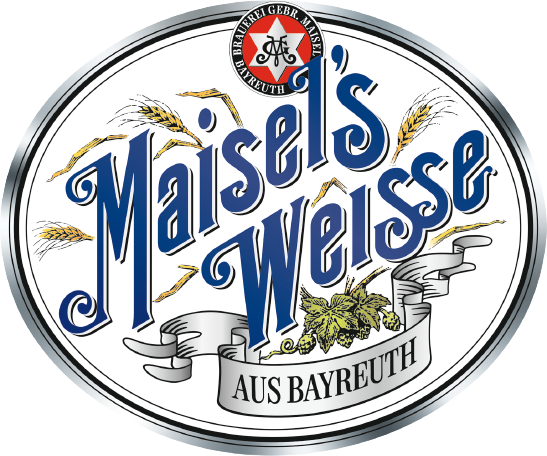
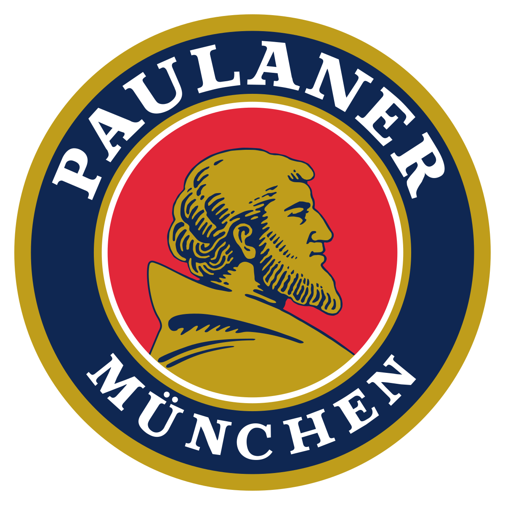
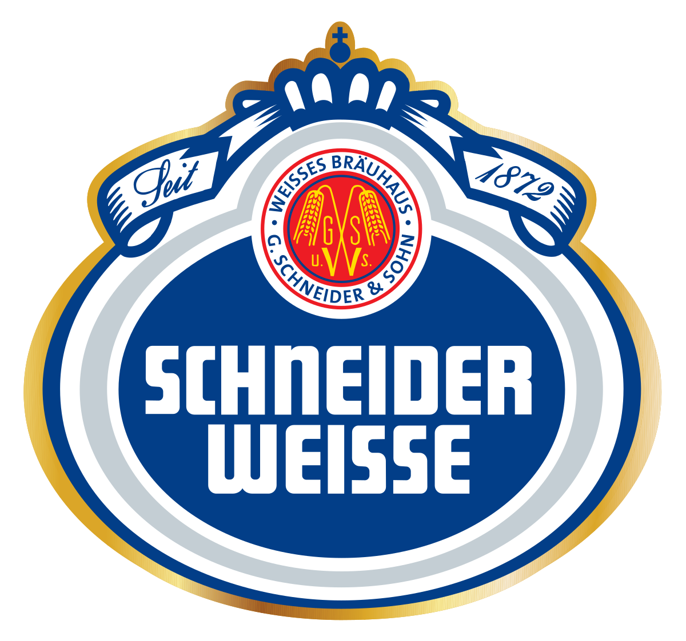
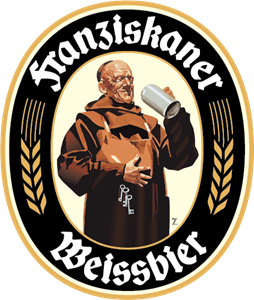

Bavaria Breweries

- Andechs Abbey
- Arcobräu
- Augustiner-Bräu

- Ayinger Brewery

- Bayerische Staatsbrauerei Weihenstephan

- Erdinger

- Hacker-Pschorr Brewery
- Herzoglich Bayerisches Brauhaus
- Tegernsee
- Staatliches Hofbräuhaus München
- Kaiser Bräu
- König Ludwig Schlossbrauerei
- Kulmbacher Brewery
- Löwenbräu

- Maisel Brau Bamberg

- Paulaner Brauerei

- Privatbrauerei Hofmühl
- Schlenkerla
- G.Schneider & Sohn

- Spaten-Franziskaner-Bräu

- St.Erhard
- Stadtbrauerei Spalt
- Sterneckerbräu
- Thorbräu
- Tucher Brewery
- Weltenburg Abbey
- Würzburger Hofbräu
- Zoigl